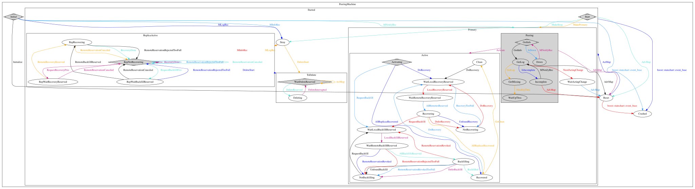

Notice
This document is for a development version of Ceph.
Peering
Concepts
- Peering
the process of bringing all of the OSDs that store a Placement Group (PG) into agreement about the state of all of the objects in that PG and all of the metadata associated with those objects. Two OSDs can agree on the state of the objects in the placement group yet still may not necessarily have the latest contents.
- Acting set
the ordered list of OSDs that are (or were as of some epoch) responsible for a particular PG.
- Up set
the ordered list of OSDs responsible for a particular PG for a particular epoch, according to CRUSH. This is the same as the acting set except when the acting set has been explicitly overridden via PG temp in the OSDMap.
- PG temp
a temporary placement group acting set that is used while backfilling the primary OSD. Assume that the acting set is
[0,1,2]and we areactive+clean. Now assume that something happens and the acting set becomes[3,1,2]. Under these circumstances, OSD3is empty and can’t serve reads even though it is the primary.osd.3will respond by requesting a PG temp of[1,2,3]to the monitors using aMOSDPGTempmessage, andosd.1will become the primary temporarily.osd.1will selectosd.3as a backfill peer and will continue to serve reads and writes whileosd.3is backfilled. When backfilling is complete, PG temp is discarded. The acting set changes back to[3,1,2]andosd.3becomes the primary.- current interval or past interval
a sequence of OSD map epochs during which the acting set and the up set for particular PG do not change.
- primary
the member of the acting set that is responsible for coordination peering. The only OSD that accepts client-initiated writes to the objects in a placement group. By convention, the primary is the first member of the acting set.
- replica
a non-primary OSD in the acting set of a placement group. A replica has been recognized as a non-primary OSD and has been activated by the primary.
- stray
an OSD that is not a member of the current acting set and has not yet been told to delete its copies of a particular placement group.
- recovery
the process of ensuring that copies of all of the objects in a PG are on all of the OSDs in the acting set. After peering has been performed, the primary can begin accepting write operations and recovery can proceed in the background.
- PG info
basic metadata about the PG’s creation epoch, the version for the most recent write to the PG, the last epoch started, the last epoch clean, and the beginning of the current interval. Any inter-OSD communication about PGs includes the PG info, such that any OSD that knows a PG exists (or once existed) and also has a lower bound on last epoch clean or last epoch started.
- PG log
a list of recent updates made to objects in a PG. These logs can be truncated after all OSDs in the acting set have acknowledged the changes.
- missing set
the set of all objects that have not yet had their contents updated to match the log entries. The missing set is collated by each OSD. Missing sets are kept track of on an
<OSD,PG>basis.- Authoritative History
a complete and fully-ordered set of operations that bring an OSD’s copy of a Placement Group up to date.
- epoch
a (monotonically increasing) OSD map version number.
- last epoch start
the last epoch at which all nodes in the acting set for a given placement group agreed on an authoritative history. At the start of the last epoch, peering is deemed to have been successful.
- up_thru
before a primary can successfully complete the peering process, it must inform a monitor that is alive through the current OSD map epoch by having the monitor set its up_thru in the osd map. This helps peering ignore previous acting sets for which peering never completed after certain sequences of failures, such as the second interval below:
acting set = [A,B]
acting set = [A]
acting set = [] very shortly after (e.g., simultaneous failure, but staggered detection)
acting set = [B] (B restarts, A does not)
- last epoch clean
the last epoch at which all nodes in the acting set for a given placement group were completely up to date (this includes both the PG’s logs and the PG’s object contents). At this point, recovery is deemed to have been completed.
Description of the Peering Process
The Golden Rule is that no write operation to any PG is acknowledged to a client until it has been persisted by all members of the acting set for that PG. This means that if we can communicate with at least one member of each acting set since the last successful peering, someone will have a record of every (acknowledged) operation since the last successful peering. This means that it should be possible for the current primary to construct and disseminate a new authoritative history.
It is also important to appreciate the role of the OSD map (list of all known OSDs and their states, as well as some information about the placement groups) in the peering process:
When OSDs go up or down (or get added or removed) this has the potential to affect the active sets of many placement groups.
Before a primary successfully completes the peering process, the OSD map must reflect that the OSD was alive and well as of the first epoch in the current interval.
Changes can only be made after successful peering.
Thus, a new primary can use the latest OSD map along with a recent history of past maps to generate a set of past intervals to determine which OSDs must be consulted before we can successfully peer. The set of past intervals is bounded by last epoch started, the most recent past interval for which we know peering completed. The process by which an OSD discovers a PG exists in the first place is by exchanging PG info messages, so the OSD always has some lower bound on last epoch started.
The high level process is for the current PG primary to:
get a recent OSD map (to identify the members of the all interesting acting sets, and confirm that we are still the primary).
generate a list of past intervals since last epoch started. Consider the subset of those for which up_thru was greater than the first interval epoch by the last interval epoch’s OSD map; that is, the subset for which peering could have completed before the acting set changed to another set of OSDs.
Successful peering will require that we be able to contact at least one OSD from each of past interval’s acting set.
ask every node in that list for its PG info, which includes the most recent write made to the PG, and a value for last epoch started. If we learn about a last epoch started that is newer than our own, we can prune older past intervals and reduce the peer OSDs we need to contact.
if anyone else has (in its PG log) operations that I do not have, instruct them to send me the missing log entries so that the primary’s PG log is up to date (includes the newest write)..
for each member of the current acting set:
ask it for copies of all PG log entries since last epoch start so that I can verify that they agree with mine (or know what objects I will be telling it to delete).
If the cluster failed before an operation was persisted by all members of the acting set, and the subsequent peering did not remember that operation, and a node that did remember that operation later rejoined, its logs would record a different (divergent) history than the authoritative history that was reconstructed in the peering after the failure.
Since the divergent events were not recorded in other logs from that acting set, they were not acknowledged to the client, and there is no harm in discarding them (so that all OSDs agree on the authoritative history). But, we will have to instruct any OSD that stores data from a divergent update to delete the affected (and now deemed to be apocryphal) objects.
ask it for its missing set (object updates recorded in its PG log, but for which it does not have the new data). This is the list of objects that must be fully replicated before we can accept writes.
at this point, the primary’s PG log contains an authoritative history of the placement group, and the OSD now has sufficient information to bring any other OSD in the acting set up to date.
if the primary’s up_thru value in the current OSD map is not greater than or equal to the first epoch in the current interval, send a request to the monitor to update it, and wait until receive an updated OSD map that reflects the change.
for each member of the current acting set:
send them log updates to bring their PG logs into agreement with my own (authoritative history) … which may involve deciding to delete divergent objects.
await acknowledgment that they have persisted the PG log entries.
at this point all OSDs in the acting set agree on all of the meta-data, and would (in any future peering) return identical accounts of all updates.
start accepting client write operations (because we have unanimous agreement on the state of the objects into which those updates are being accepted). Note, however, that if a client tries to write to an object it will be promoted to the front of the recovery queue, and the write willy be applied after it is fully replicated to the current acting set.
update the last epoch started value in our local PG info, and instruct other active set OSDs to do the same.
start pulling object data updates that other OSDs have, but I do not. We may need to query OSDs from additional past intervals prior to last epoch started (the last time peering completed) and following last epoch clean (the last epoch that recovery completed) in order to find copies of all objects.
start pushing object data updates to other OSDs that do not yet have them.
We push these updates from the primary (rather than having the replicas pull them) because this allows the primary to ensure that a replica has the current contents before sending it an update write. It also makes it possible for a single read (from the primary) to be used to write the data to multiple replicas. If each replica did its own pulls, the data might have to be read multiple times.
once all replicas store the all copies of all objects (that existed prior to the start of this epoch) we can update last epoch clean in the PG info, and we can dismiss all of the stray replicas, allowing them to delete their copies of objects for which they are no longer in the acting set.
We could not dismiss the strays prior to this because it was possible that one of those strays might hold the sole surviving copy of an old object (all of whose copies disappeared before they could be replicated on members of the current acting set).
Generate a State Model
Use the gen_state_diagram.py script to generate a copy of the latest peering state model:
$ git clone https://github.com/ceph/ceph.git
$ cd ceph
$ cat src/osd/PeeringState.h src/osd/PeeringState.cc | doc/scripts/gen_state_diagram.py > doc/dev/peering_graph.generated.dot
$ sed -i 's/7,7/1080,1080/' doc/dev/peering_graph.generated.dot
$ dot -Tsvg doc/dev/peering_graph.generated.dot > doc/dev/peering_graph.generated.svg
Sample state model:

Brought to you by the Ceph Foundation
The Ceph Documentation is a community resource funded and hosted by the non-profit Ceph Foundation. If you would like to support this and our other efforts, please consider joining now.